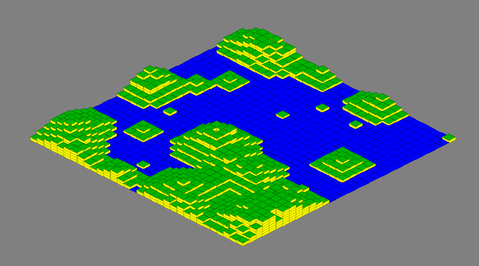
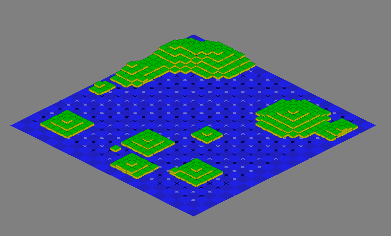
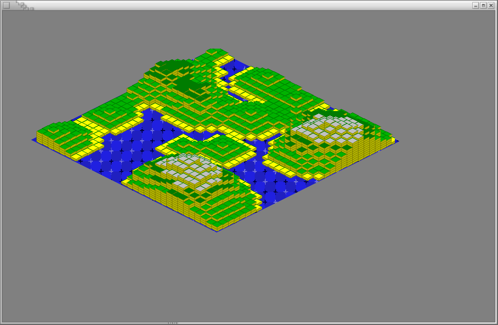
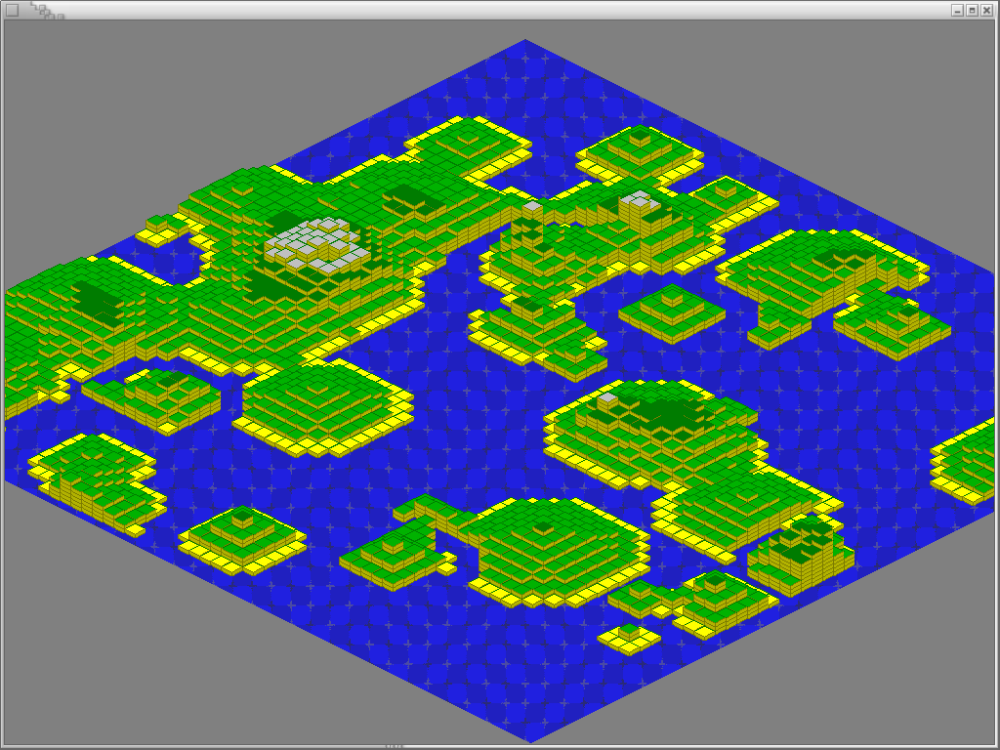
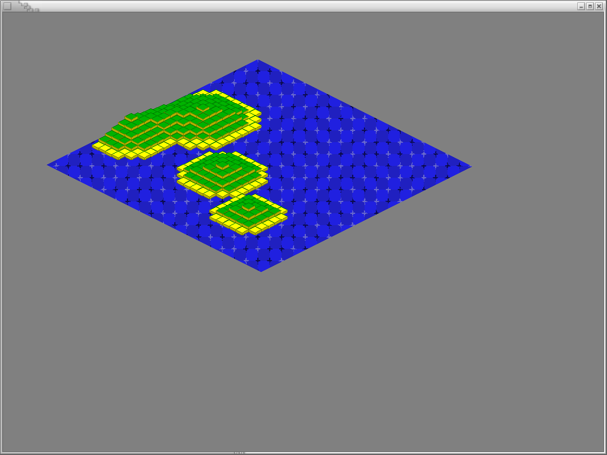
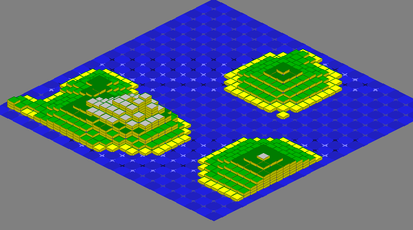
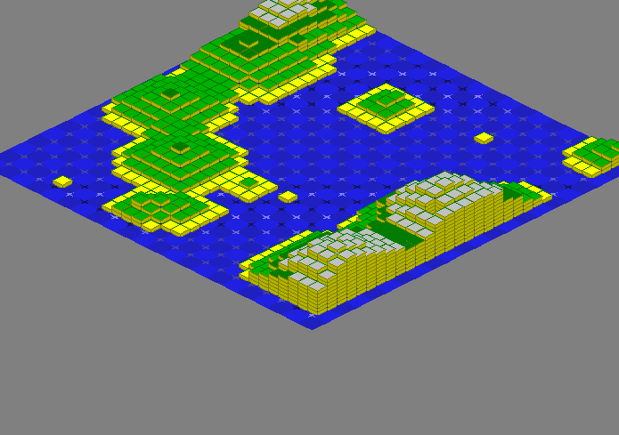
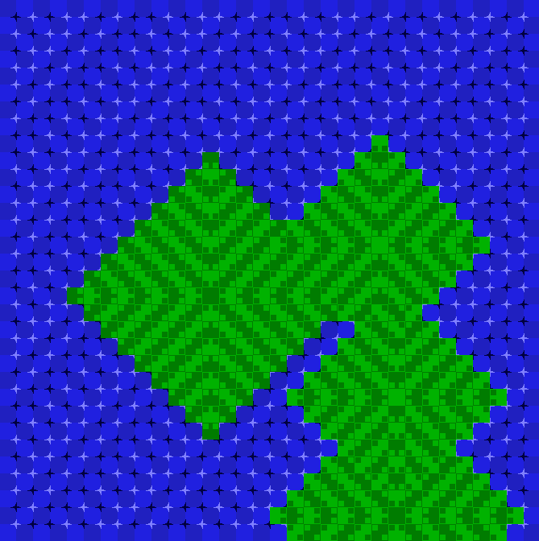

Schirmschüsse für alle
Demo 0
Basically just getting the isometric map rendering without any effects.

Demo 1
This is the isometric map of demo 0 with the primrose illusion rendered underneath, utilizing a different set of colors.

Demo 2
The illusion effect in demo 1 was not very strong, specifically because of the isometric projection. I attempted to return the pattern of the illusion itself to a normal orthographics projection, and then clip it down to fit the map, but the results were not impressive.



Demo 3
This is the demo that can be viewed in the isometric map demo under the demos page. Only a small portion of the illusion pattern is revealed at any one point in time, and that portion sweeps across the screen, giving the effect of a moving wave. This, however, is very subtle, leading me to rethink the perspective of the project.


Demo 4
This is the demo that can be viewed in the orthographic map demo under the demos page. It utilizes both the primrose field illusion for the water and the bulge illusion for the hills. This is the strongest demo so far. I will most likely make a game similar to Fire Emblem on the GameBoy Advance (yes, I will even develope it on the GBA).
